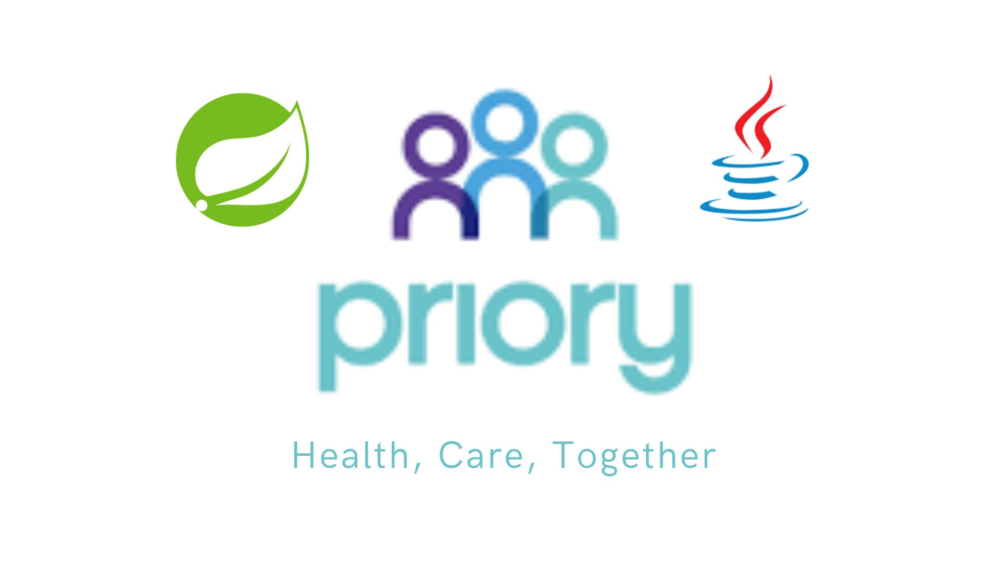

Hola 👋🏼, soy
Gonzalo
Pontnau
Python Backend Developer
Sobre Mí

Tecnologías
Python
Django
FastAPI
Go
Flask
SQLite
PostgreSQL
RESTful APIs
HTML/CSS/JS
Mis Proyectos


Visualizador de Precios de Criptomonedas
Aplicación web que muestra en tiempo real los precios de las 10 principales criptomonedas utilizando la API de CoinMarketCap. Incluye datos detallados como capitalización de mercado, volumen de 24h y cambio porcentual a través del endpoint
Python
Flask
CoinMarketCap API
HTML/CSS


API RESTful Clínica Médica Priory
API completa desarrollada con Spring Boot que proporciona un sistema de gestión para una clínica médica, implementando operaciones CRUD con MySQL, migraciones con Flyway, validaciones y autenticación JWT.
Java
Spring Boot
MySQL
JWT
Flyway
OpenAPI
SOLID
Spring Security